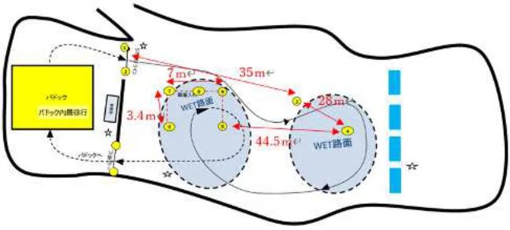
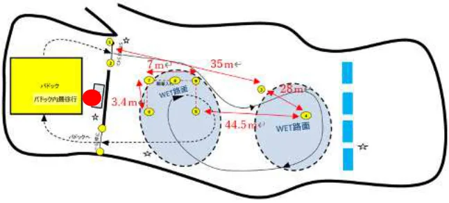

ドリフトテスト オーガナイザーガイドライン
JAF の公式サイトではありません。JAF が公開する PDF を自動変換した非公式の検索用アーカイブです。記載内容は必ず JAF の原本 PDF で出典をご確認ください。 検索と AI 質問つきのビューアで開く
P.1ドリフトテスト オーガナイザーガイドライン
ドリフトテストの目的
ドリフトテストは、これまでモータースポーツに馴染みの無い方々を主な対象として、
普段使用している自家用車を使用し、最低限の安全装備でタイヤが滑る感覚を体験し、ドリフトの認知度向上、ひいてはモータースポーツに興味を持ってもらうことを目的とした競技（コンテスト）です。
路面をウェット等にすることで車両への負担を軽減し、自家用車でもできる限り安易に滑走状態を発生させるようにします。２０１２年に公認競技となったドリフトですが、車を操るテクニックが必要であり、スリップ時の体感や対応にも適しています。滑走時間を短くすることで、これまでモータースポーツに馴染みのない方々を主な対象とし、まずは非日常的なタイヤが滑る状態を体験してもらい、車を操る難しさ、楽しさを感じてもらうことと日常運転時における突発事象等発生時回避への一助としていただくことを目的としています。
ガイドラインの趣旨
本ガイドラインはドリフトテストの開催を試みるオーガナイザーを支援することにあります。ドリフト競技の開催経験のないクラブ団体におかれましても
参考としていただき、参加者・オーガナイザー双方に有益な競技会としてください。
目次
＜開催前＞
● 会場選定 ・・・・・・・・・・・・・・・・・・・・・・・・・・・・・・２ ● 参加者の募集 ・・・・・・・・・・・・・・・・・・・・・・・・・・・・２ ● 競技会特別規則書 ・・・・・・・・・・・・・・・・・・・・・・・・・・２ ● 受理書 ・・・・・・・・・・・・・・・・・・・・・・・・・・・・・・・３ ● コース設定 ・・・・・・・・・・・・・・・・・・・・・・・・・・・・・３ ● 観者 ・・・・・・・・・・・・・・・・・・・・・・・・・・・・・・・・４ ● 講師について ・・・・・・・・・・・・・・・・・・・・・・・・・・・・４ ● 参加者への案内 ・・・・・・・・・・・・・・・・・・・・・・・・・・・４ ＜当日＞ ● 案内・受付 ・・・・・・・・・・・・・・・・・・・・・・・・・・・・・５ ● 車両・装備確認 ・・・・・・・・・・・・・・・・・・・・・・・・・・・５ ● ブリーフィング ・・・・・・・・・・・・・・・・・・・・・・・・・・・５ ● 散水について ・・・・・・・・・・・・・・・・・・・・・・・・・・・・６ ● 練習走行 ・・・・・・・・・・・・・・・・・・・・・・・・・・・・・・６
P.2● 競技（ドリフトコンテスト） ・・・・・・・・・・・・・・・・・・・・・６ ● 判定方法 ・・・・・・・・・・・・・・・・・・・・・・・・・・・・・・６ ● ＜終了後＞ ・・・・・・・・・・・・・・・・・・・・・・・・・・・・・７
＜開催前＞
●会場選定
ドリフトテストでは、滑走操作を容易にするとともに過度な車両への負担を軽減するため、故意に滑りやすい路面にする必要があります。散水等を行う場合、給水可能且つ十分な水を持ち込める場所を選定してください。
また、散水により泥などがコース上に流入しないよう留意してください。
なお、アンダーステアや基定速度超過による基定動線外側への車両の膨らみを担保
するように留意してください。
Point
・散水等対応可能な場所
・フラットな硬質路面
・安全マージンを取れる十分な広さ
●参加者の募集
ＪＡＦではＪＡＦ予約決済システムを導入しています。クレジットカード決済手数料がかかりますがＣＳＶで受付情報を主催クラブに提供することができ、決済もＷＥ Ｂ上で完了するため現金の管理が不要です。なお、クラブ団体への支払いはイベント終了後になりますのでご注意ください。Point：受付項目(参考)
・名前
・住所
・連絡先
・血液型（ＲＨ）
・参加車両
・車両登録番号
・駆動形式
・特別規則書
・誓約書（国内競技規則４−１５）
●競技会特別規則書
参加者がモータースポーツに馴染みがない場合を想定し、できる限りわかりやすく記載してください。重心の高い車両（車幅と車高との相関による）や駐車ブレーキ
P.3（サイドブレーキ、パーキングブレーキ等）の仕様により、ドリフト（故意に滑走走
行させる）ことが容易ではない車両については、当該車両専用のコース設定を行う等
三次元的な車両の動きを回避（適宜参加制限を考慮）してください。
Point：記載する内容（参考）
・規定する条文（国内競技規則３－４）
・競技会の名称
・競技種目および格式
・オーガナイザーの名称、所在地、代表者氏名
・競技会の場所、日程
・組織委員、競技会審査委員、競技長の各氏名
・競技の細目、参加車両の詳細、参加者（および運転者）の資格ならびに定員
※手動式駐車ブレーキ（ハンドサイド）車両推奨等
・参加申込の受付開始＊１および締切日＊２ならびにその場所と方法
・参加料の金額
・保険に関する細目
・参加車両の公式検査の日程
・罰則規定
・賞典の方法および賞の細目
・順位判定の方法
・その他競技会の運営に必要とする適用諸規則（ガイドライン含む）に則った事項
※１組織許可（クローズド申請）受理翌日以降（国内競技規則４－１３）
※２国内競技は競技会開催７日前、クローズドはその限りではない（国内競技規則４－１
６）
●受理書
特別規則に特に規定しない場合は、オーガナイザーは参加申込書を受付けたのち、
速やかに受理通知します。（国内競技規則４－２１）
ＪＡＦ予約決済システムを使用する場合は予約決済システムの「予約受付メール」
をもって受理とすることが可能です。
●コース設定
コース及び審判員配置については当該競技会審査委員会の確認を得てください。
Point：参考コース
・滑走走行未経験者（初心者）が無理に加速した場合、アンダーステアが発生しやす
くなります。
P.4・サイドブレーキを使用した際に十分にハンドルが切れていないと直進してしまうケースがあります。

設定例①
右ハンドル車両の参加が占める場合、左手で手動式駐車ブレーキ（ハンドサイド）を引きつつ、右手でハンドルを右にきるコースは技術的にハードルが低くなります。
設定例②
参加車両の先進安全機能、駐車ブレーキ（サイドブレーキ、パーキングブレーキ等）の仕様、駆動方式や重心の高低（車幅と車高との相関による）によっては、当該参加車両専用に滑走走行を可能としたコース設定の検討・開発により参加車両の拡幅が可能となります。
●観者
随行者・観者の立ち入り区画は、車両の進行方向に対面する区画や滑走部・曲線部
外側には設定せず、車両の走路直線部と並行した区画（進行方向外側）とし、防護体によるコース、走路との分離・隔離に加え、防護体から一定の距離の後方に設定してください。Point観者向けの説明資料があるとより楽しめます。
●講師について
競技前には練習・慣熟走行を行い、車両の動線や特性、動きを認識する必要があります。車両特性に応じたアドバイスを実施できるようにします。Point
・ＦＭトランスミッターなどで車両内でも説明・助言が聞けるとよりステップアップにつながります。
●参加者への案内
当日のスムーズな進行のためにも事前の資料配布（展開）は重要です。また、会場
P.5への経路も案内します。
Point 事前資料
・会場への案内図
・当日タイムスケジュール
・パドック図（駐車位置）
・講師の案内
・Ｂライセンス申請の案内（クローズドの場合）
＜当日＞
●案内・受付
参加者来場時には駐待機場（パドック）を行き交う車両により事故が発生しないよう注意して誘導を行います。
また普段車両に積んでいる荷物を下ろすことになるのでスペースにも余裕が必要です。Point
・パドックを一方通行とする
・パドックは広めに確保する
●車両・装備確認
「スピード競技開催規定 細則ドリフトテスト開催要項」に基づいた車両・装備であるか確認します。ヘルメットはフルフェイスやジェットヘルメットなど耳が隠れるタイプの着用が推奨されます。Point
・会場レイアウトによっては受付や車検をドライブスルーで行い、パドックに誘導するという方法もあります。
●ブリーフィング
車両走行前に座学としてドリフト走行の基本講習を行います。コース図に基づき、基調となる走行ラインや判定事項やドリフトポイントの採点方法、フットブレーキ、サイドブレーキを使用するポイントを伝えます。Point：内容
・スタート方法
・旗の説明
・走行方法
・判定事項
・会場の案内
P.6・デモ(模範)走行
●散水について
滑走操作を容易にするとともに過度な車両への負担を軽減するために散水等を行います。散水タイミングは気候にもよりますがハーフウェットにならないように相当量の散水を行ってください。Point
・滑走基定動線（ドリフト走行を意図した）区間に相当量の散水が為されていないとグリップが急に戻り、挙動が乱れる場合があります。
・散水以外にも滑走状態を作りやすい路面であれば開催可能です。電動パーキングブレーキ（ＥＰＢ）装備車両など、現在販売されている多くの車種が参加できるよう対応ください。
●練習走行
車両の動線や特性を掴むために練習・慣熟走行の時間を設けましょう。例えば、第
１ヒートはワンコーナー、第２ヒートはサイドブレーキを使用し、任意に設定された停止枠内への車庫入れなどステップ分けを行うことを推奨します。安全のためにコース上は常に１台走行になるようにしてください。Point
・繰り返し練習できるように１０台程度のクラス分けを行います。
・走行順は駆動形式で分けると進行がスムーズです。
・走行中に講師から説明・助言を行えるようにします。
●競技（ドリフトコンテスト）
２回程度の競技走行を行います。安全のためにコース上は常に１台走行になるようにしてください。Point
・実況アナウンスを実施することにより、参加者・随行者・観者ともに活況を呈します。
●判定方法
任意に設定された停止枠内へ収まったタイヤ本数、パイロン移動、ドリフトポイン
トにより判定します。
Point
・ドリフトポイントは設定コース上のコーナー走行時および任意に設定された枠内への停止時の姿勢をもとに判定します。
P.7・ドリフトポイントの判定は防護体を設置したり、段差の上に設置するなど安全を確保したうえで加速ライン上を推奨します。

＜終了後＞
近隣でのドリフト走行イベントや練習会などドリフトに関する情報があれば提供く
ださい。また、アンケートを実施することで次回開催の一助としてください。